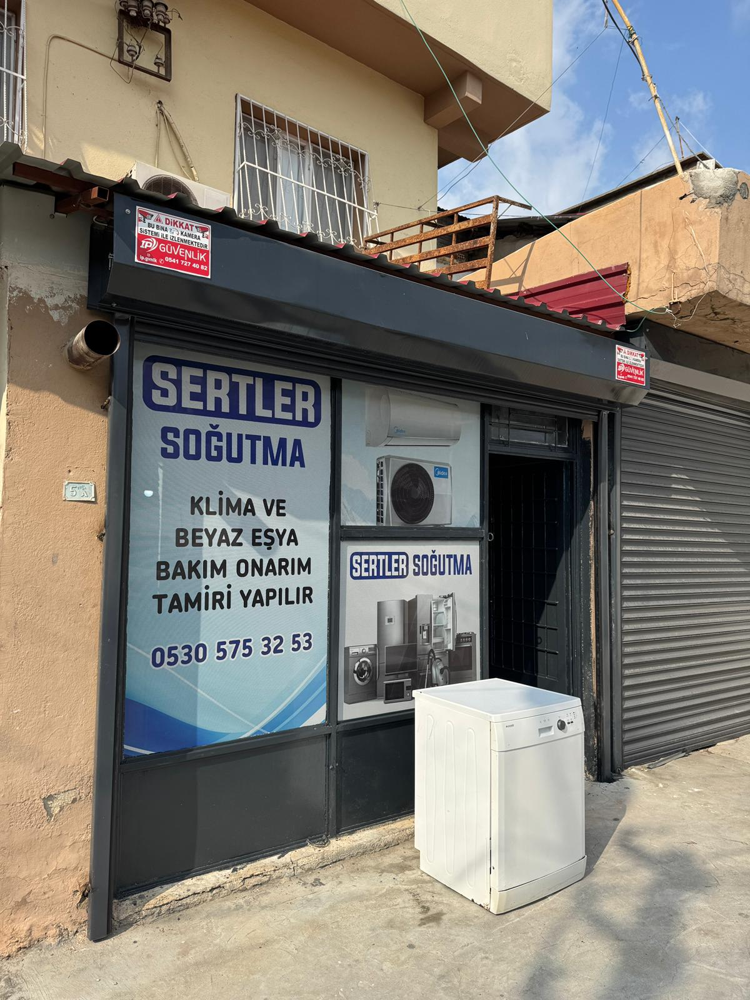

Klimadan buzdolabına, çamaşır makinesinden derin dondurucuya kadar tüm beyaz eşya ve soğutma sistemlerinizde yanınızdayız.


Türkiye'nin ve dünyanın önde gelen beyaz eşya ve klima markalarına yetkili servis kalitesinde hizmet veriyoruz.
Serdar Sert liderliğinde, Sertler Soğutma olarak müşteri memnuniyetini her şeyin önünde tutuyoruz.
Arızanızı en kısa sürede gideriyoruz. Bekletmeden, ertelemeden hızlı servis.
Tüm onarımlarda yalnızca orijinal ve garantili yedek parça kullanıyoruz.
Alanında deneyimli teknik ekibimiz tüm marka ve modellerde çözüm üretir.
Şeffaf ve adil fiyat politikasıyla sürpriz fatura yok, güvenli hizmet var.
Arızalı cihazınız için profesyonel, şeffaf ve hızlı bir süreç izliyoruz.
Arızanızı bildirin, sizin için en uygun güne ve saate hemen randevu oluşturalım.
Tam donanımlı uzman ekibimiz söz verdiğimiz saatte adresinize ulaşır.
Cihazınızdaki sorun yerinde tespit edilir ve onayınıza sunularak süreç başlar.
Orijinal yedek parça kullanılarak onarım yapılır, garantili teslimat sağlanır.
Düzenli çalışma saatlerimiz dışında acil durumlar için de bize ulaşabilirsiniz.
Tarsus merkez ve çevre köylerine düzenli servis hizmeti sunuyoruz.
Tarsus ilçe merkezinin yanı sıra; Gülek, Yenice, Sofular, Atalar, Bahşiş, Yeşiltepe, Dörtler ve çevre köylerimize de servis hizmeti vermekteyiz. Köy servisi için arayarak randevu almanız yeterlidir.
Bizi tercih eden müşterilerimizin deneyimlerini okuyun.
"Geçen hafta klimamın bakımını yaptırdım. Sabah aradım, öğleden sonra geldiler. Çalışma sırasında etrafı hiç kirletmediler, bitince de her şeyi topladılar. Fiyat konusunda da önceden net bilgi verdiler, sonradan sürpriz çıkmadı. Bu tür işlerde fiyatı söylemeden gelen çok oluyor, burada öyle bir durum yaşamadım."
Mart 2025 · Klima Bakımı"Buzdolabı birdenbire soğutmayı bıraktı, içindeki her şey mahvolacaktı. Serdar Bey'i aradım, durumu anlattım. Ertesi sabah geldi, kompresör sorunu olduğunu söyledi. Orijinal parça bulması biraz sürdü ama iki gün içinde halletti. Şu an tertemiz çalışıyor, üstelik garantisi de var. Çok memnun kaldım."
Şubat 2025 · Buzdolabı Tamiri"Gülek'ten aradım, köye geliyor musunuz diye sordum. Salı günü gelirler dediler, gerçekten de geldiler. Çamaşır makinesi suyunu almıyordu, vana değişti halloldu. Köyde bu tür işleri halletmek hep sıkıntı olurdu, artık bildiğim bir yer var. Bir sonraki arızada yine arayacağım."
Ocak 2025 · Çamaşır Makinesi"Yeni aldığım klimanın montajı için üç farklı yerden fiyat aldım. Sertler Soğutma hem en uygun fiyatı verdi hem de en erken geldi. Montajı yaparken duvara fazladan delik açmadan hallettiler, bu benim için çok önemliydi. İşleri bittikten sonra klimayı test ettiler, her şeyin çalıştığını gösterdiler. Tavsiye ederim."
Aralık 2024 · Klima Montajı"Markette kullandığım derin dondurucu arızalandı, içindeki mallar erimeye başladı. Sabah erken saatlerde aradım, acil olduğunu söyledim. Öğleye kadar geldiler. Soğutma gazı kaçağı varmış, hem gaz doldurdular hem de kaçak yerini tamir ettiler. Hızlı davranmasalardı epey zararım olacaktı. Ellerine sağlık."
Kasım 2024 · Derin Dondurucu"Bulaşık makinesi su almıyordu, komşum Sertler Soğutma'yı tavsiye etti. Aradım, kibarca dinlediler ve randevu verdiler. Gelen teknisyen önce kontrol etti, hangi parçanın bozulduğunu açıkladı. Parçayı getirip taktılar, makine çalışır hale geldi. Yaklaşık iki saatte her şey bitti. Fiyatı da makuldü, memnun kaldım."
Ekim 2024 · Bulaşık MakinesiAklınıza takılan soruların cevaplarını burada bulabilirsiniz.
Klimanız yeterince soğutmuyorsa, ısıtmada zorlanıyorsa veya ortam istenilen dereceye gelmiyorsa gaz eksiği olabilir. Ortalama 2-3 yılda bir gaz ve basınç kontrolü yapılmasını öneriyoruz.
Özel bir teknik servis olarak, cihazınızın fabrika (yetkili servis) garantisi devam ediyorsa cihazın garantisini bozmamak için müdahale etmiyoruz. Ancak garantisi dolmuş her marka cihaz için garantili onarım sağlıyoruz.
Evet, Tarsus ve çevresindeki köylere (Gülek, Yenice, Sofular vb.) düzenli servis turlarımız mevcuttur. Uzaklık endişesi yaşamadan köy servis rotamız için bizimle iletişime geçip randevu oluşturabilirsiniz.
Arızanın kesin tespiti yapılmadan net bir fiyat vermek zordur. Ancak cihazınızın modelini ve sorunu WhatsApp üzerinden iletirseniz, sizlere tahmini bir onarım fiyatı sunabiliriz. Kesin tespit için adresinize gelinmesi gerekmektedir.
Usta Serdar Sert ve ekibi, modern ekipmanlarla donatılmış atölyede Tarsus'un güvenilir teknik servis noktası olarak hizmet vermektedir.

Hemen bizi arayın veya WhatsApp'tan mesaj gönderin, en kısa sürede yanınızda olalım.
Arızanız için bizi arayabilir, WhatsApp'tan mesaj gönderebilir veya iş yerimize uğrayabilirsiniz.
Reşadiye Mah. 3005 Sokak No:5
Tarsus / Mersin